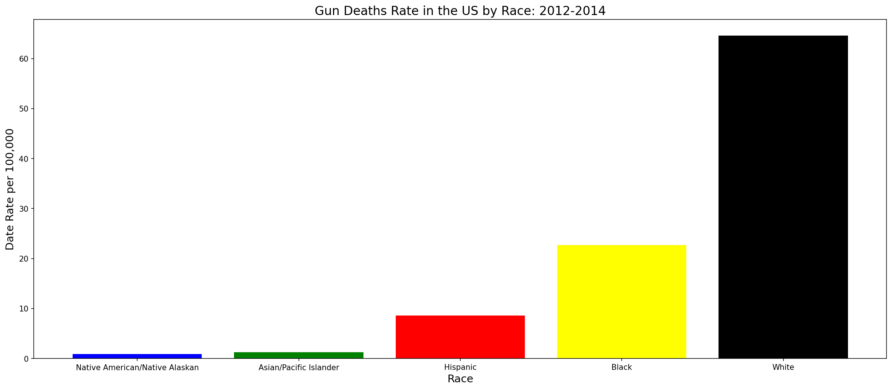
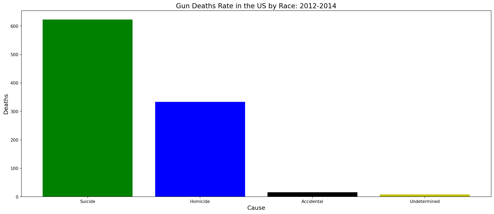
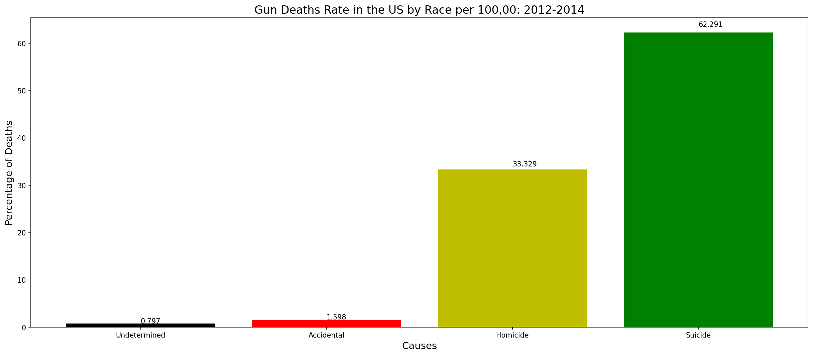
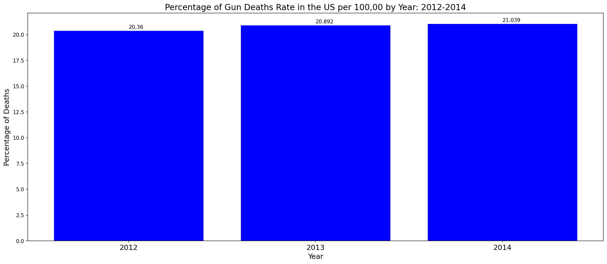

Key Findings
Gender & suicide
Males had a consistently higher gun suicide rate than females across 2012–2014, with little change year over year.
Race
White Americans represented 64.5% of gun deaths per 100,000 — the most vulnerable group. Bar chart clearly shows the disparity across racial groups.
Cause of death
Suicide was the leading cause of gun deaths, far exceeding homicide and other intents.
Cause percentage
Suicide accounted for 62.3% of gun deaths per 100,000 people — the highest of all causes, confirmed by annotated bar chart.
Annual trend
Substantial change in the percentage of gun deaths was observed across the three-year period, visible in the year-by-year bar chart.
Visualizations
Annual suicide gun deaths by gender (2012–2014)

Gun death rate by race per 100,000 people

Annual gun deaths by cause

Percentage of gun deaths by cause per 100,000

Percentage of gun deaths by year per 100,000
Notebook
View Notebook →